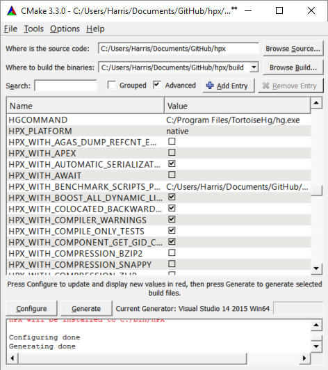
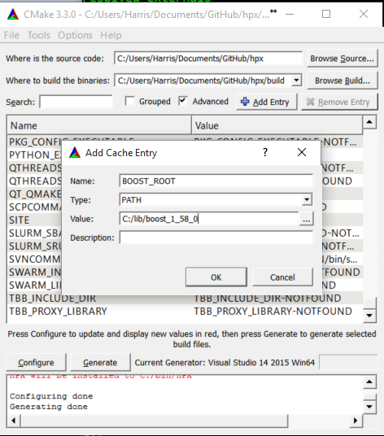

HPX build system¶
The build system for HPX is based on CMake. CMake is a cross-platform build-generator tool. CMake does not build the project, it generates the files needed by your build tool (GNU make, Visual Studio, etc.) for building HPX.
This section gives an introduction on how to use our build system to build HPX and how to use HPX in your own projects.
CMake basics¶
CMake is a cross-platform build-generator tool. cmake does not build the project, it generates the files needed by your build tool (gnu make, visual studio, etc.) for building HPX.
in general, the hpx CMake scripts try to adhere to the general cmake policies on how to write CMake based projects.
Basic CMake usage¶
This section explains basic aspects of CMake, mostly for explaining those options which you may need on your day-to-day usage.
CMake comes with extensive documentation in the form of html files and on the
cmake executable itself. Execute cmake --help for further help options.
CMake requires to know for which build tool it shall generate files (GNU make,
Visual Studio, Xcode, etc.). If not specified on the command line, it tries to
guess it based on you environment. Once identified the build tool, CMake uses
the corresponding Generator for creating files for your build tool. You can
explicitly specify the generator with the command line option -G "Name of the
generator". For knowing the available generators on your platform, execute:
cmake --help
This will list the generator names at the end of the help text. Generator names are case-sensitive. Example:
cmake -G "Visual Studio 9 2008" path/to/hpx
For a given development platform there can be more than one adequate generator.
If you use Visual Studio "NMake Makefiles" is a generator you can use for
building with NMake. By default, CMake chooses the more specific generator
supported by your development environment. If you want an alternative generator,
you must tell this to CMake with the -G option.
Quick start¶
We use here the command-line, non-interactive CMake interface.
Download and install CMake here: CMake Downloads. Version 3.3.2 is the minimally required version for HPX.
Open a shell. Your development tools must be reachable from this shell through the
PATHenvironment variable.Create a directory for containing the build. It is not supported to build HPX on the source directory. cd to this directory:
mkdir mybuilddir cd mybuilddirExecute this command on the shell replacing
path/to/hpx/with the path to the root of your HPX source tree:cmake path/to/hpx
CMake will detect your development environment, perform a series of tests and will generate the files required for building HPX. CMake will use default values for all build parameters. See the cmake_variables section for fine-tuning your build.
This can fail if CMake can’t detect your toolset, or if it thinks that the
environment is not sane enough. In this case make sure that the toolset that you
intend to use is the only one reachable from the shell and that the shell itself
is the correct one for you development environment. CMake will refuse to build
MinGW makefiles if you have a POSIX shell reachable through the PATH
environment variable, for instance. You can force CMake to use various compilers
and tools. Please visit CMake Useful Variables
for a detailed overview of specific CMake variables.
Options and variables¶
Variables customize how the build will be generated. Options are boolean
variables, with possible values ON/OFF. Options and variables are
defined on the CMake command line like this:
cmake -DVARIABLE=value path/to/hpx
You can set a variable after the initial CMake invocation for changing its value. You can also undefine a variable:
cmake -UVARIABLE path/to/hpx
Variables are stored on the CMake cache. This is a file named CMakeCache.txt
on the root of the build directory. Do not hand-edit it.
Variables are listed here appending its type after a colon. It is correct to write the variable and the type on the CMake command line:
cmake -DVARIABLE:TYPE=value path/to/llvm/source
CMake supports the following variable types: BOOL (options), STRING
(arbitrary string), PATH (directory name), FILEPATH (file name).
Prerequisites¶
Supported platforms¶
At this time, HPX supports the following platforms. Other platforms may work, but we do not test HPX with other platforms, so please be warned.
Name |
Recommended Version |
Minimum Version |
Architectures |
|---|---|---|---|
Linux |
3.2 |
2.6 |
x86-32, x86-64, k1om |
BlueGeneQ |
V1R2M0 |
V1R2M0 |
PowerPC A2 |
Windows |
7, Server 2008 R2 |
Any Windows system |
x86-32, x86-64 |
Mac OSX |
Any OSX system |
x86-64 |
Software and libraries¶
In the simplest case, HPX depends on Boost and Portable Hardware Locality (HWLOC). So, before you read further, please make sure you have a recent version of Boost installed on your target machine. HPX currently requires at least Boost V1.61.0 to work properly. It may build and run with older versions, but we do not test HPX with those versions, so please be warned.
Installing the Boost libraries is described in detail in Boost’s own Getting Started document. It is often possible to download the Boost libraries using the package manager of your distribution. Please refer to the corresponding documentation for your system for more information.
The installation of Boost is described in detail in Boost’s own Getting Started document. However, if you’ve never used the Boost libraries (or even if you have), here’s a quick primer: Installing Boost.
In addition, we require a recent version of hwloc in order to support thread pinning and NUMA awareness. See Installing Hwloc for instructions on building Portable Hardware Locality (HWLOC).
HPX is written in 99.99% Standard C++ (the remaining 0.01% is platform specific assembly code). As such HPX is compilable with almost any standards compliant C++ compiler. A compiler supporting the C++11 Standard is highly recommended. The code base takes advantage of C++11 language features when available (move semantics, rvalue references, magic statics, etc.). This may speed up the execution of your code significantly. We currently support the following C++ compilers: GCC, MSVC, ICPC and clang. For the status of your favorite compiler with HPX visit HPX Buildbot Website.
Name |
Recommended version |
Minimum version |
Notes |
Compilers |
|||
4.9 or newer |
4.9 |
||
2014 or newer |
2014 |
||
3.8 or newer |
3.8 |
||
Build System |
|||
3.9.0 |
3.3.2 |
Cuda support 3.9 |
|
Required Libraries |
|||
1.67.0 or newer |
1.61.0 |
||
1.11 |
1.2 (Xeon Phi: 1.6) |
Note
When compiling with the Intel Compiler on Linux systems, we only support C++
Standard Libraries provided by gcc 4.8 and upwards. If the g++ in your
path is older than 4.8, please specify the path of a newer g++ by setting
CMAKE_CXX_FLAGS='-gxx-name=/path/to/g++' via CMake.
Note
When building Boost using gcc please note that it is always a good idea to
specify a cxxflags=-std=c++11 command line argument to b2 (bjam).
Note however, that this is absolutely necessary when using gcc V5.2 and
above.
Name |
Recommended version |
Minimum version |
Notes |
Compilers |
|||
Visual C++ (x64) |
2015 |
2015 |
|
Build System |
|||
3.9.0 |
3.3.2 |
||
Required Libraries |
|||
1.67.0 or newer |
1.61.0 |
||
1.11 |
1.5 |
Note
You need to build the following Boost libraries for HPX: Boost.Filesystem, Boost.ProgramOptions, Boost.Regex, and Boost.System. The following are not needed by default, but are required in certain configurations: Boost.Chrono, Boost.DateTime, Boost.Log, Boost.LogSetup, and Boost.Thread.
Depending on the options you chose while building and installing HPX, you will find that HPX may depend on several other libraries such as those listed below.
Note
In order to use a high speed parcelport, we currently recommend configuring
HPX to use MPI so that MPI can be used for communication between different
localities. Please set the CMake variable MPI_CXX_COMPILER to your MPI
C++ compiler wrapper if not detected automatically.
Name |
Recommended version |
Minimum version |
Notes |
1.7.1 |
1.7.1 |
Used as a replacement for the system allocator, and for allocation diagnostics. |
|
0.99 |
0.97 |
Dependency of google-perftools on x86-64, used for stack unwinding. |
|
1.10.1 |
1.8.0 |
Can be used as a highspeed communication library backend for the parcelport. |
Note
When using OpenMPI please note that Ubuntu (notably 18.04 LTS) and older
Debian ship an OpenMPI 2.x built with --enable-heterogeneous which may
cause communication failures at runtime and should not be used.
Name |
Recommended version |
Minimum version |
Notes |
Performance Application Programming Interface (PAPI) |
Used for accessing hardware performance data. |
||
2.1.2 |
2.1.0 |
Used as a replacement for the system allocator. |
|
1.8.7 |
1.6.7 |
Used for data I/O in some example applications. See important note below. |
Name |
Recommended version |
Minimum version |
Notes |
1.8.7 |
1.6.7 |
Used for data I/O in some example applications. See important note below. |
Important
The C++ HDF5 libraries must be compiled with enabled thread safety support. This has to be explicitly specified while configuring the HDF5 libraries as it is not the default. Additionally, you must set the following environment variables before configuring the HDF5 libraries (this part only needs to be done on Linux):
export CFLAGS='-DHDatexit=""'
export CPPFLAGS='-DHDatexit=""'
Documentation¶
To build the HPX documentation you need recent versions of the following packages:
python(2 or 3)sphinx(Python package)sphinx_rtd_theme(Python package)breathe(Python package)doxygen
If the Python dependencies are not available through your system package
manager you can install them using the Python package manager pip:
pip install --user sphinx sphinx_rtd_theme breathe
You may need to set the following CMake variables to make sure CMake can find the required dependencies.
Installing Boost¶
Important
When building Boost using gcc please note that it is always a good idea to
specify a cxxflags=-std=c++11 command line argument to b2 (bjam).
Note however, that this is absolutely necessary when using gcc V5.2 and
above.
Important
On Windows, depending on the installed versions of Visual Studio, you might
also want to pass the correct toolset to the b2 command depending on
which version of the IDE you want to use. In addition, passing
address-model=64 is highly recommended. It might be also necessary to add
command line argument --build-type=complete to the b2 command on the
Windows platform.
The easiest way to create a working Boost installation is to compile Boost from
sources yourself. This is particularly important as many high performance
resources, even if they have Boost installed, usually only provide you with an
older version of Boost. We suggest you download the most recent release of the
Boost libraries from here: Boost Downloads. Unpack the downloaded archive
into a directory of your choosing. We will refer to this directory a $BOOST.
Building and installing the Boost binaries is simple, regardless what platform you are on the basic instructions are as follows (with possible additional platform-dependent command line arguments):
cd $BOOST
bootstrap --prefix=<where to install boost>
./b2 -j<N>
./b2 install
where: <where to install boost> is the directory the built binaries will be
installed to, and <N> is the number of cores to use to build the Boost
binaries.
After the above sequence of commands has been executed (this may take a while!)
you will need to specify the directory where Boost was installed as
BOOST_ROOT (<where to install boost>) while executing cmake for HPX as
explained in detail in the sections How to install HPX on Unix variants and
How to install HPX on Windows.
Installing Hwloc¶
Note
These instructions are for everything except Windows. On Windows there is no
need to build hwloc. Instead download the latest release, extract the files,
and set HWLOC_ROOT during cmake configuration to the directory in which
you extracted the files.
We suggest you download the most recent release of hwloc from here:
Hwloc Downloads. Unpack the downloaded archive into a directory of your
choosing. We will refer to this directory as $HWLOC.
To build hwloc run:
cd $HWLOC
./configure --prefix=<where to install hwloc>
make -j<N> install
where: <where to install hwloc> is the directory the built binaries will be
installed to, and <N> is the number of cores to use to build hwloc.
After the above sequence of commands has been executed you will need to specify
the directory where Hwloc was installed as HWLOC_ROOT (<where to install
hwloc>) while executing cmake for HPX as explained in detail in the sections
How to install HPX on Unix variants and How to install HPX on Windows.
Please see Hwloc Documentation for more information about Hwloc.
Building HPX¶
Basic information¶
Once CMake has been run, the build process can be started. The HPX build process is highly configurable through CMake and various CMake variables influence the build process. The build process consists of the following parts:
The HPX core libraries (target core): This forms the basic set of HPX libraries. The generated targets are:
hpx: The core HPX library (always enabled).hpx_init: The HPX initialization library that applications need to link against to define the HPX entry points (disabled for static builds).hpx_wrap: The HPX static library used to determine the runtime behavior of HPX code and respective entry points forhpx_main.hiostreams_component: The component used for (distributed) IO (always enabled).component_storage_component: The component needed for migration to persistent storage.unordered_component: The component needed for a distributed (partitioned) hash table.partioned_vector_component: The component needed for a distributed (partitioned) vector.memory_component: A dynamically loaded plugin that exposed memory based performance counters (only available on Linux).io_counter_component: A dynamically loaded plugin plugin that exposes I/O performance counters (only available on Linux).papi_component: A dynamically loaded plugin that exposes PAPI performance counters (enabled withHPX_WITH_PAPI:BOOL, default isOff).
HPX Examples (target
examples): This target is enabled by default and builds all HPX examples (disable by settingHPX_WITH_EXAMPLES:BOOL=Off). HPX examples are part of thealltarget and are included in the installation if enabled.HPX Tests (target
tests): This target builds the HPX test suite and is enabled by default (disable by settingHPX_WITH_TESTS:BOOL=Off). They are not built by thealltarget and have to be built separately.HPX Documentation (target
docs): This target builds the documentation, this is not enabled by default (enable by settingHPX_WITH_DOCUMENTATION:BOOL=On. For more information see Documentation.
For a complete list of available CMake variables that influence the build of HPX see cmake_variables.
The variables can be used to refine the recipes that can be found Platform specific build recipes which show some basic steps on how to build HPX for a specific platform.
In order to use HPX, only the core libraries are required (the ones marked as
optional above are truly optional). When building against HPX, the CMake
variable HPX_LIBRARIES will contain hpx and hpx_init (for pkgconfig,
those are added to the Libs sections). In order to use the optional
libraries, you need to specify them as link dependencies in your build (See
Creating HPX projects).
As HPX is a modern C++ Library we require a certain minimal set of features from the C++11 standard. In addition, we make use of certain C++14 features if the used compiler supports them. This means that the HPX build system will try to determine the highest support C++ standard flavor and check for availability of those features. That is, the default will be the highest C++ standard version available. If you want to force HPX to use a specific C++ standard version you can use the following CMake variables:
HPX_WITH_CXX0X: Enables Pre-C++11 support (This is the minimal required mode on older gcc versions).HPX_WITH_CXX11: Enables C++11 supportHPX_WITH_CXX14: Enables C++14 supportHPX_WITH_CXX17: Enables C++17 supportHPX_WITH_CXX2A: Enables (experimental) C++20 support
Build types¶
CMake can be configured to generate project files suitable for builds that
have enabled debugging support or for an optimized build (without debugging
support). The CMake variable used to set the build type is
CMAKE_BUILD_TYPE (for more information see the CMake Documentation).
Available build types are:
Debug: Full debug symbols available and additional assertions to help debugging. To enable the debug build type for the HPX API, the C++ Macro
HPX_DEBUGis defined.RelWithDebInfo: Release build with debugging symbols. This is most useful for profiling applications
Release: Release build. This disables assertions and enables default compiler optimizations.
RelMinSize: Release build with optimizations for small binary sizes.
Important
We currently don’t guarantee ABI compatibility between Debug and Release
builds. Please make sure that applications built against HPX use the same
build type as you used to build HPX. For CMake builds, this means that
the CMAKE_BUILD_TYPE variables have to match and for projects not using
CMake, the HPX_DEBUG macro has to be set in debug mode.
Platform specific notes¶
Some platforms require to have special link and/or compiler flags specified to build HPX. This is handled via CMake’s support for different toolchains (see cmake-toolchains(7) for more information). This is also used for cross compilation.
HPX ships with a set of toolchains that can be used for compilation of HPX itself and applications depending on HPX. Please see CMake toolchains shipped with HPX for more information.
In order to enable full static linking with the libraries, the CMake variable
HPX_WITH_STATIC_LINKING:BOOL has to be set to On.
Debugging applications using core files¶
For HPX to generate useful core files, HPX has to be compiled without signal
and exception handlers
HPX_WITH_DISABLED_SIGNAL_EXCEPTION_HANDLERS:BOOL. If this option is
not specified, the signal handlers change the application state. For example,
after a segmentation fault the stack trace will show the signal handler.
Similarly, unhandled exceptions are also caught by the these handlers and the
stack trace will not point to the location where the unhandled exception was
thrown.
In general, core files are a helpful tool to inspect the state of the application at the moment of the crash (post-mortem debugging), without the need of attaching a debugger beforehand. This approach to debugging is especially useful if the error cannot be reliably reproduced, as only a single crashed application run is required to gain potentially helpful information like a stacktrace.
To debug with core files, the operating system first has to be told to actually write them. On most unix systems this can be done by calling:
ulimit -c unlimited
in the shell. Now the debugger can be started up with:
gdb <application> <core file name>
The debugger should now display the last state of the application. The default
file name for core files is core.
Platform specific build recipes¶
Note
The following build recipes are mostly user-contributed and may be outdated. We always welcome updated and new build recipes.
How to install HPX on Unix variants¶
Create a build directory. HPX requires an out-of-tree build. This means you will be unable to run CMake in the HPX source tree.
cd hpx mkdir my_hpx_build cd my_hpx_build
Invoke CMake from your build directory, pointing the CMake driver to the root of your HPX source tree.
cmake -DBOOST_ROOT=/root/of/boost/installation \ -DHWLOC_ROOT=/root/of/hwloc/installation [other CMake variable definitions] \ /path/to/source/tree
for instance:
cmake -DBOOST_ROOT=~/packages/boost -DHWLOC_ROOT=/packages/hwloc -DCMAKE_INSTALL_PREFIX=~/packages/hpx ~/downloads/hpx_0.9.10
Invoke GNU make. If you are on a machine with multiple cores, add the -jN flag to your make invocation, where N is the number of parallel processes HPX gets compiled with.
gmake -j4
Caution
Compiling and linking HPX needs a considerable amount of memory. It is advisable that at least 2 GB of memory per parallel process is available.
Note
Many Linux distributions use
makeas an alias forgmake.To complete the build and install HPX:
gmake install
Important
These commands will build and install the essential core components of HPX only. In order to build and run the tests, please invoke:
gmake tests && gmake test
and in order to build (and install) all examples invoke:
cmake -DHPX_WITH_EXAMPLES=On . gmake examples gmake install
For more detailed information about using CMake please refer its documentation
and also the section Building HPX. Please pay special attention to the
section about HPX_WITH_MALLOC:STRING as this is crucial for getting
decent performance.
How to install HPX on OS X (Mac)¶
This section describes how to build HPX for OS X (Mac).
Build (and install) a recent version of Boost, using Clang and libc++¶
To build Boost with Clang and make it link to libc++ as standard library, you’ll
need to set up either of the following in your ~/user-config.jam file:
# user-config.jam (put this file into your home directory)
# ...
using clang
:
: "/usr/bin/clang++"
: <cxxflags>"-std=c++11 -fcolor-diagnostics"
<linkflags>"-stdlib=libc++ -L/path/to/libcxx/lib"
;
(Again, remember to replace /path/to with whatever you used earlier.)
You can then use as build command either:
b2 --build-dir=/tmp/build-boost --layout=versioned toolset=clang install -j4
or:
b2 --build-dir=/tmp/build-boost --layout=versioned toolset=clang install -j4
We verified this using Boost V1.53. If you use a different version, just
remember to replace /usr/local/include/boost-1_53 with whatever include prefix
you had in your installation.
Build HPX, finally¶
cd /path/to
git clone https://github.com/STEllAR-GROUP/hpx.git
mkdir build-hpx && cd build-hpx
To build with Clang 3.2, execute:
cmake ../hpx \
-DCMAKE_CXX_COMPILER=clang++ \
-DBOOST_INCLUDE_DIR=/usr/local/include/boost-1_53 \
-DBOOST_LIBRARY_DIR=/usr/local/lib \
-DBOOST_SUFFIX=-clang-darwin32-mt-1_53 \
make
To build with Clang 3.3 (trunk), execute:
cmake ../hpx \
-DCMAKE_CXX_COMPILER=clang++ \
-DBOOST_INCLUDE_DIR=/usr/local/include/boost-1_53 \
-DBOOST_LIBRARY_DIR=/usr/local/lib \
-DBOOST_SUFFIX=-clang-darwin33-mt-1_53 \
make
For more detailed information about using CMake please refer its documentation and to the section Building HPX for.
Alternative installation method of HPX on OS X (Mac)¶
Alternatively, you can install a recent version of gcc as well as all required libraries via MacPorts:
Install MacPorts
Install CMake, gcc 4.8, and hwloc:
sudo port install gcc48 sudo port install hwloc
You may also want:
sudo port install cmake sudo port install git-core
Make this version of gcc your default compiler:
sudo port install gcc_select sudo port select gcc mp-gcc48Build Boost manually (the Boost package of MacPorts is built with Clang, and unfortunately doesn’t work with a GCC-build version of HPX):
wget https://dl.bintray.com/boostorg/release/1.69.0/source/boost_1_69_0.tar.bz2 tar xjf boost_1_69_0.tar.bz2 pushd boost_1_69_0 export BOOST_ROOT=$HOME/boost_1_69_0 ./bootstrap.sh --prefix=$BOOST_DIR ./b2 -j8 ./b2 -j8 install export DYLD_LIBRARY_PATH=$DYLD_LIBRARY_PATH:$BOOST_ROOT/lib popd
Build HPX:
git clone https://github.com/STEllAR-GROUP/hpx.git mkdir hpx-build pushd hpx-build export HPX_ROOT=$HOME/hpx cmake -DCMAKE_C_COMPILER=gcc \ -DCMAKE_CXX_COMPILER=g++ \ -DCMAKE_FORTRAN_COMPILER=gfortran \ -DCMAKE_C_FLAGS="-Wno-unused-local-typedefs" \ -DCMAKE_CXX_FLAGS="-Wno-unused-local-typedefs" \ -DBOOST_ROOT=$BOOST_ROOT \ -DHWLOC_ROOT=/opt/local \ -DCMAKE_INSTALL_PREFIX=$HOME/hpx \ $(pwd)/../hpx make -j8 make -j8 install export DYLD_LIBRARY_PATH=$DYLD_LIBRARY_PATH:$HPX_ROOT/lib/hpx popd
Note that you need to set
BOOST_ROOT,HPX_ROOTandDYLD_LIBRARY_PATH(for bothBOOST_ROOTandHPX_ROOTevery time you configure, build, or run an HPX application.If you want to use HPX with MPI, you need to enable the MPI parcelport, and also specify the location of the MPI wrapper scripts. This can be done e.g. with the following command:
cmake -DHPX_WITH_PARCELPORT_MPI=ON \ -DCMAKE_C_COMPILER=gcc \ -DCMAKE_CXX_COMPILER=g++ \ -DCMAKE_FORTRAN_COMPILER=gfortran \ -DMPI_C_COMPILER=openmpicc \ -DMPI_CXX_COMPILER=openmpic++ \ -DMPI_FORTRAN_COMPILER=openmpif90 \ -DCMAKE_C_FLAGS="-Wno-unused-local-typedefs" \ -DCMAKE_CXX_FLAGS="-Wno-unused-local-typedefs" \ -DBOOST_ROOT=$BOOST_DIR \ -DHWLOC_ROOT=/opt/local \ -DCMAKE_INSTALL_PREFIX=$HOME/hpx $(pwd)/../hpx
How to install HPX on Windows¶
Installation of required prerequisites¶
Download the Boost c++ libraries from Boost Downloads
Install the boost library as explained in the section Installing Boost
Install the hwloc library as explained in the section Installing Hwloc
Download the latest version of CMake binaries, which are located under the platform section of the downloads page at CMake Downloads.
Download the latest version of HPX from the STE||AR website: HPX Downloads.
Installation of the HPX library¶
Create a build folder. HPX requires an out-of-tree-build. This means that you will be unable to run CMake in the HPX source folder.
Open up the CMake GUI. In the input box labelled “Where is the source code:”, enter the full path to the source folder. The source directory is one where the sources were checked out. CMakeLists.txt files in the source directory as well as the subdirectories describe the build to CMake. In addition to this, there are CMake scripts (usually ending in .cmake) stored in a special CMake directory. CMake does not alter any file in the source directory and doesn’t add new ones either. In the input box labelled “Where to build the binaries:”, enter the full path to the build folder you created before. The build directory is one where all compiler outputs are stored, which includes object files and final executables.
Add CMake variable definitions (if any) by clicking the “Add Entry” button. There are two required variables you need to define:
BOOST_ROOTandHWLOC_ROOTThese (PATH) variables need to be set to point to the root folder of your Boost and Portable Hardware Locality (HWLOC) installations. It is recommended to set the variableCMAKE_INSTALL_PREFIXas well. This determines where the HPX libraries will be built and installed. If this (PATH) variable is set, it has to refer to the directory where the built HPX files should be installed to.Press the “Configure” button. A window will pop up asking you which compilers to use. Select the Visual Studio 10 (64Bit) compiler (it usually is the default if available). The Visual Studio 2012 (64Bit) and Visual Studio 2013 (64Bit) compilers are supported as well. Note that while it is possible to build HPX for x86, we don’t recommend doing so as 32 bit runs are severely restricted by a 32 bit Windows system limitation affecting the number of HPX threads you can create.
Press “Configure” again. Repeat this step until the “Generate” button becomes clickable (and until no variable definitions are marked red anymore).
Press “Generate”.
Open up the build folder, and double-click hpx.sln.
Build the INSTALL target.
For more detailed information about using CMake please refer its documentation and also the section Building HPX.
How to build HPX under Windows 10 x64 with Visual Studio 2015¶
Download the CMake V3.4.3 installer (or latest version) from here
Download the Portable Hardware Locality (HWLOC) V1.11.0 (or latest version) from here and unpack it.
Download the latest Boost libraries from here and unpack them.
Build the boost DLLs and LIBs by using these commands from Command Line (or PowerShell). Open CMD/PowerShell inside the Boost dir and type in:
bootstrap.bat
This batch file will set up everything needed to create a successful build. Now execute:
b2.exe link=shared variant=release,debug architecture=x86 address-model=64 threading=multi --build-type=complete install
This command will start a (very long) build of all available Boost libraries. Please, be patient.
Open CMake-GUI.exe and set up your source directory (input field ‘Where is the source code’) to the base directory of the source code you downloaded from HPX’s GitHub pages. Here’s an example of my CMake path settings which point to my
Documents/GitHub/hpxfolder:Fig. 3 Example CMake path settings.¶
Inside the ‘Where is the source-code’ enter the base directory of your HPX source directory (do not enter the “src” sub-directory!) Inside ‘Where to build the binaries’ you should put in the path where all the building process will happen. This is important because the building machinery will do an “out-of-tree” build. CMake is not touching or changing in any way the original source files. Instead, it will generate Visual Studio Solution Files which will build HPX packages out of the HPX source tree.
Set three new environment variables (in CMake, not in Windows environment, by the way):
BOOST_ROOT,HWLOC_ROOT,CMAKE_INSTALL_PREFIX. The meaning of these variables is as follows:BOOST_ROOTthe root directory of the unpacked Boost headers/cpp files.HWLOC_ROOTthe root directory of the unpacked Portable Hardware Locality files.CMAKE_INSTALL_PREFIXthe “root directory” where the future builds of HPX should be installed to.Note
HPX is a BIG software collection and I really don’t recommend using the default
C:\Program Files\hpx. I prefer simpler paths without white space, likeC:\bin\hpxorD:\bin\hpxetc.
To insert new env-vars click on “Add Entry” and then insert the name inside “Name”, select
PATHas Type and put the path-name in “Path” text field. Repeat this for the first three variables.This is how variable insertion looks like:
Fig. 4 Example CMake adding entry.¶
Alternatively you could provide
BOOST_LIBRARYDIRinstead ofBOOST_ROOTwith a difference thatBOOST_LIBRARYDIRshould point to the subdirectory inside Boost root where all the compiled DLLs/LIBs are. I myself have usedBOOST_LIBRARYDIRwhich pointed to thebin.v2subdirectory under the Boost rootdir. Important is to keep the meanings of these two variables separated from each other:BOOST_DIRpoints to the ROOT folder of the boost library.BOOST_LIBRARYDIRpoints to the subdir inside Boost root folder where the compiled binaries are.Click the ‘Configure’ button of CMake-GUI. You will be immediately presented a small window where you can select the C++ compiler to be used within Visual Studio. In my case I have used the latest v14 (a.k.a C++ 2015) but older versions should be sufficient too. Make sure to select the 64Bit compiler
After the generate process has finished successfully click the ‘Generate’ button. Now, CMake will put new VS Solution files into the BUILD folder you selected at the beginning.
Open Visual Studio and load the
HPX.slnfrom your build folder.Go to
CMakePredefinedTargetsand build theINSTALLproject:
Fig. 5 Visual Studio INSTALL target.¶
It will take some time to compile everything and in the end you should see an output similar to this one:

Fig. 6 Visual Studio build output.¶
How to Install HPX on BlueGene/Q¶
So far we only support BGClang for compiling HPX on the BlueGene/Q.
Check if BGClang is available on your installation. If not obtain and install a copy from the BGClang trac page.
Build (and install) a recent version of Hwloc Downloads. With the following commands:
./configure \ --host=powerpc64-bgq-linux \ --prefix=$HOME/install/hwloc \ --disable-shared \ --enable-static \ CPPFLAGS='-I/bgsys/drivers/ppcfloor -I/bgsys/drivers/ppcfloor/spi/include/kernel/cnk/' make make install
Build (and install) a recent version of Boost, using BGClang. To build Boost with BGClang, you’ll need to set up the following in your Boost
~/user-config.jamfile:# user-config.jam (put this file into your home directory) using clang : : bgclang++11 : ;
You can then use this as your build command:
./bootstrap.sh ./b2 --build-dir=/tmp/build-boost --layout=versioned toolset=clang -j12
Clone the master HPX git repository (or a stable tag):
git clone git://github.com/STEllAR-GROUP/hpx.git
Generate the HPX buildfiles using cmake:
cmake -DHPX_PLATFORM=BlueGeneQ \ -DCMAKE_TOOLCHAIN_FILE=/path/to/hpx/cmake/toolchains/BGQ.cmake \ -DCMAKE_CXX_COMPILER=bgclang++11 \ -DMPI_CXX_COMPILER=mpiclang++11 \ -DHWLOC_ROOT=/path/to/hwloc/installation \ -DBOOST_ROOT=/path/to/boost \ -DHPX_WITH_MALLOC=system \ /path/to/hpx
To complete the build and install HPX:
make -j24 make install
This will build and install the essential core components of HPX only. Use:
make -j24 examples make -j24 install
to build and install the examples.
How to Install HPX on the Xeon Phi¶
Installation of the Boost Libraries¶
Download Boost Downloads for Linux and unpack the retrieved tarball.
Adapt your
~/user-config.jamto contain the following lines:## Toolset to be used for compiling for the host using intel : host : : <cxxflags>"-std=c++0x" ; ## Toolset to be used for compiling for the Xeon Phi using intel : mic : : <cxxflags>"-std=c++0x -mmic" <linkflags>"-std=c++0x -mmic" ;
Change to the directory you unpacked boost in (from now on referred to as
$BOOST_ROOT) and execute the following commands:./bootstrap.sh ./b2 toolset=intel-mic -j<N>
You should now have all the required boost libraries.
Installation of the Hwloc library¶
Download Hwloc Downloads, unpack the retrieved tarball and change to the newly created directory.
Run the configure-make-install procedure as follows:
CC=icc CFLAGS=-mmic CXX=icpc CXXFLAGS=-mmic LDFLAGS=-mmic ./configure --host=x86_64-k1om-linux --prefix=$HWLOC_ROOT make make install
Important
The minimally required version of the Portable Hardware Locality (HWLOC) library on the Intel Xeon Phi is V1.6.
You now have a working hwloc installation in $HWLOC_ROOT.
Building HPX¶
After all the prerequisites have been successfully installed, we can now start building and installing HPX. The build procedure is almost the same as for How to install HPX on Unix variants with the sole difference that you have to enable the Xeon Phi in the CMake Build system. This is achieved by invoking CMake in the following way:
cmake \
-DCMAKE_TOOLCHAIN_FILE=/path/to/hpx/cmake/toolchains/XeonPhi.cmake \
-DBOOST_ROOT=$BOOST_ROOT \
-DHWLOC_ROOT=$HWLOC_ROOT \
/path/to/hpx
For more detailed information about using CMake please refer to its
documentation and to the section Building HPX. Please pay special
attention to the section about HPX_WITH_MALLOC:STRING as this is
crucial for getting decent performance on the Xeon Phi.
How to install HPX on Fedora distributions¶
Important
There are official HPX packages for Fedora. Unless you want to customize your build you may want to start off with the official packages. Instructions can be found on the HPX Downloads page.
Note
This section of the manual is based off of our collaborators Patrick Diehl’s blog post Installing HPX on Fedora 22.
Install all packages for minimal installation:
sudo dnf install gcc-c++ cmake boost-build boost boost-devel hwloc-devel \ hwloc gcc-gfortran papi-devel gperftools-devel docbook-dtds \ docbook-style-xsl libsodium-devel doxygen boost-doc hdf5-devel \ fop boost-devel boost-openmpi-devel boost-mpich-devel
Get the development branch of HPX:
git clone https://github.com/STEllAR-GROUP/hpx.git
Configure it with CMake:
cd hpx mkdir build cd build cmake -DCMAKE_INSTALL_PREFIX=/opt/hpx .. make -j make install
Note
To build HPX without examples use:
cmake -DCMAKE_INSTALL_PREFIX=/opt/hpx -DHPX_WITH_EXAMPLES=Off ..
Add the library path of HPX to ldconfig:
sudo echo /opt/hpx/lib > /etc/ld.so.conf.d/hpx.conf sudo ldconfig
How to install HPX on Arch distributions¶
Important
There are HPX packages for Arch in the AUR. Unless you want to customize your build you may want to start off with those. Instructions can be found on the HPX Downloads page.
Install all packages for a minimal installation:
sudo pacman -S gcc clang cmake boost hwloc gperftools
For building the documentation you will need to further install the following:
sudo pacman -S doxygen python-pip pip install --user sphinx sphinx_rtd_theme breathe
The rest of the installation steps are same as provided with Fedora or Unix variants.
How to install HPX on Debian-based distributions¶
Install all packages for a minimal installation:
sudo apt install cmake libboost-all-dev hwloc libgoogle-perftools-dev
For building the documentation you will need to further install the following:
sudo apt install doxygen python-pip pip install --user sphinx sphinx_rtd_theme breathe
or the following if you prefer to get Python packages from the Debian repositories:
sudo apt install doxygen python-sphinx python-sphinx-rtd-theme python-breathe
The rest of the installation steps are same as provided with Fedora or Unix variants.
CMake toolchains shipped with HPX¶
In order to compile HPX for various platforms, we provide a variety of toolchain
files that take care of setting up various CMake variables like compilers etc.
They are located in the cmake/toolchains directory:
To use them pass the -DCMAKE_TOOLCHAIN_FILE=<toolchain> argument to the
cmake invocation.
CrayKNL¶
# Copyright (c) 2014 Thomas Heller
#
# Distributed under the Boost Software License, Version 1.0. (See accompanying
# file LICENSE_1_0.txt or copy at http://www.boost.org/LICENSE_1_0.txt)
#
# This is the default toolchain file to be used with Intel Xeon PHIs. It sets
# the appropriate compile flags and compiler such that HPX will compile.
# Note that you still need to provide Boost, hwloc and other utility libraries
# like a custom allocator yourself.
#
if(HPX_WITH_STATIC_LINKING)
set_property(GLOBAL PROPERTY TARGET_SUPPORTS_SHARED_LIBS FALSE)
else()
endif()
# Set the Cray Compiler Wrapper
set(CMAKE_CXX_COMPILER CC)
set(CMAKE_C_COMPILER cc)
set(CMAKE_Fortran_COMPILER ftn)
if (CMAKE_VERSION VERSION_GREATER 3.3.9)
set(__includes "<INCLUDES>")
endif()
set(CMAKE_C_FLAGS_INIT "" CACHE STRING "")
set(CMAKE_SHARED_LIBRARY_C_FLAGS "-fPIC -shared" CACHE STRING "")
set(CMAKE_SHARED_LIBRARY_CREATE_C_FLAGS "-fPIC -shared" CACHE STRING "")
set(CMAKE_C_COMPILE_OBJECT "<CMAKE_C_COMPILER> -shared -fPIC <DEFINES> ${__includes} <FLAGS> -o <OBJECT> -c <SOURCE>" CACHE STRING "")
set(CMAKE_C_LINK_EXECUTABLE "<CMAKE_C_COMPILER> -fPIC <FLAGS> <CMAKE_C_LINK_FLAGS> <LINK_FLAGS> <OBJECTS> -o <TARGET> <LINK_LIBRARIES>" CACHE STRING "")
set(CMAKE_C_CREATE_SHARED_LIBRARY "<CMAKE_C_COMPILER> -fPIC -shared <CMAKE_SHARED_LIBRARY_CXX_FLAGS> <LANGUAGE_COMPILE_FLAGS> <LINK_FLAGS> <CMAKE_SHARED_LIBRARY_CREATE_CXX_FLAGS> <SONAME_FLAG><TARGET_SONAME> -o <TARGET> <OBJECTS> <LINK_LIBRARIES> " CACHE STRING "")
#
set(CMAKE_CXX_FLAGS_INIT "" CACHE STRING "")
set(CMAKE_SHARED_LIBRARY_CXX_FLAGS "-fPIC -shared" CACHE STRING "")
set(CMAKE_SHARED_LIBRARY_CREATE_CXX_FLAGS "-fPIC -shared" CACHE STRING "")
set(CMAKE_SHARED_LIBRARY_CREATE_CXX_FLAGS "-fPIC -shared" CACHE STRING "")
set(CMAKE_CXX_COMPILE_OBJECT "<CMAKE_CXX_COMPILER> -shared -fPIC <DEFINES> ${__includes} <FLAGS> -o <OBJECT> -c <SOURCE>" CACHE STRING "")
set(CMAKE_CXX_LINK_EXECUTABLE "<CMAKE_CXX_COMPILER> -fPIC -dynamic <FLAGS> <CMAKE_CXX_LINK_FLAGS> <LINK_FLAGS> <OBJECTS> -o <TARGET> <LINK_LIBRARIES>" CACHE STRING "")
set(CMAKE_CXX_CREATE_SHARED_LIBRARY "<CMAKE_CXX_COMPILER> -fPIC -shared <CMAKE_SHARED_LIBRARY_CXX_FLAGS> <LANGUAGE_COMPILE_FLAGS> <LINK_FLAGS> <CMAKE_SHARED_LIBRARY_CREATE_CXX_FLAGS> <SONAME_FLAG><TARGET_SONAME> -o <TARGET> <OBJECTS> <LINK_LIBRARIES>" CACHE STRING "")
#
set(CMAKE_Fortran_FLAGS_INIT "" CACHE STRING "")
set(CMAKE_SHARED_LIBRARY_Fortran_FLAGS "-fPIC" CACHE STRING "")
set(CMAKE_SHARED_LIBRARY_CREATE_Fortran_FLAGS "-shared" CACHE STRING "")
set(CMAKE_Fortran_COMPILE_OBJECT "<CMAKE_Fortran_COMPILER> -shared -fPIC <DEFINES> ${__includes} <FLAGS> -o <OBJECT> -c <SOURCE>" CACHE STRING "")
set(CMAKE_Fortran_LINK_EXECUTABLE "<CMAKE_Fortran_COMPILER> -fPIC <FLAGS> <CMAKE_Fortran_LINK_FLAGS> <LINK_FLAGS> <OBJECTS> -o <TARGET> <LINK_LIBRARIES>")
set(CMAKE_Fortran_CREATE_SHARED_LIBRARY "<CMAKE_Fortran_COMPILER> -fPIC -shared <CMAKE_SHARED_LIBRARY_Fortran_FLAGS> <LANGUAGE_COMPILE_FLAGS> <LINK_FLAGS> <CMAKE_SHARED_LIBRARY_CREATE_Fortran_FLAGS> <SONAME_FLAG><TARGET_SONAME> -o <TARGET> <OBJECTS> <LINK_LIBRARIES> " CACHE STRING "")
#
# Disable searches in the default system paths. We are cross compiling after all
# and cmake might pick up wrong libraries that way
set(CMAKE_FIND_ROOT_PATH_MODE_PROGRAM BOTH)
set(CMAKE_FIND_ROOT_PATH_MODE_LIBRARY ONLY)
set(CMAKE_FIND_ROOT_PATH_MODE_INCLUDE ONLY)
set(CMAKE_FIND_ROOT_PATH_MODE_PACKAGE ONLY)
set(HPX_WITH_PARCELPORT_TCP ON CACHE BOOL "")
set(HPX_WITH_PARCELPORT_MPI ON CACHE BOOL "")
set(HPX_WITH_PARCELPORT_MPI_MULTITHREADED OFF CACHE BOOL "")
set(HPX_WITH_PARCELPORT_LIBFABRIC ON CACHE BOOL "")
set(HPX_PARCELPORT_LIBFABRIC_PROVIDER "gni" CACHE STRING
"See libfabric docs for details, gni,verbs,psm2 etc etc")
set(HPX_PARCELPORT_LIBFABRIC_THROTTLE_SENDS "256" CACHE STRING
"Max number of messages in flight at once")
set(HPX_PARCELPORT_LIBFABRIC_WITH_DEV_MODE OFF CACHE BOOL
"Custom libfabric logging flag")
set(HPX_PARCELPORT_LIBFABRIC_WITH_LOGGING OFF CACHE BOOL
"Libfabric parcelport logging on/off flag")
set(HPX_WITH_ZERO_COPY_SERIALIZATION_THRESHOLD "4096" CACHE STRING
"The threshhold in bytes to when perform zero copy optimizations (default: 128)")
# Set the TBBMALLOC_PLATFORM correctly so that find_package(TBBMalloc) sets the
# right hints
set(TBBMALLOC_PLATFORM "mic-knl" CACHE STRING "")
# We have a bunch of cores on the MIC ... increase the default
set(HPX_WITH_MAX_CPU_COUNT "512" CACHE STRING "")
# We do a cross compilation here ...
set(CMAKE_CROSSCOMPILING ON CACHE BOOL "")
# RDTSCP is available on Xeon/Phis
set(HPX_WITH_RDTSCP ON CACHE BOOL "")
CrayKNLStatic¶
# Copyright (c) 2014-2017 Thomas Heller
# Copyright (c) 2017 Bryce Adelstein Lelbach
#
# Distributed under the Boost Software License, Version 1.0. (See accompanying
# file LICENSE_1_0.txt or copy at http://www.boost.org/LICENSE_1_0.txt)
set(HPX_WITH_STATIC_LINKING ON CACHE BOOL "")
set(HPX_WITH_STATIC_EXE_LINKING ON CACHE BOOL "")
set_property(GLOBAL PROPERTY TARGET_SUPPORTS_SHARED_LIBS FALSE)
# Set the Cray Compiler Wrapper
set(CMAKE_CXX_COMPILER CC)
set(CMAKE_C_COMPILER cc)
set(CMAKE_Fortran_COMPILER ftn)
if (CMAKE_VERSION VERSION_GREATER 3.3.9)
set(__includes "<INCLUDES>")
endif()
set(CMAKE_C_FLAGS_INIT "" CACHE STRING "")
set(CMAKE_C_COMPILE_OBJECT "<CMAKE_C_COMPILER> -static -fPIC <DEFINES> ${__includes} <FLAGS> -o <OBJECT> -c <SOURCE>" CACHE STRING "")
set(CMAKE_C_LINK_EXECUTABLE "<CMAKE_C_COMPILER> -fPIC <FLAGS> <CMAKE_C_LINK_FLAGS> <LINK_FLAGS> <OBJECTS> -o <TARGET> <LINK_LIBRARIES>" CACHE STRING "")
set(CMAKE_CXX_FLAGS_INIT "" CACHE STRING "")
set(CMAKE_CXX_COMPILE_OBJECT "<CMAKE_CXX_COMPILER> -static -fPIC <DEFINES> ${__includes} <FLAGS> -o <OBJECT> -c <SOURCE>" CACHE STRING "")
set(CMAKE_CXX_LINK_EXECUTABLE "<CMAKE_CXX_COMPILER> -fPIC <FLAGS> <CMAKE_CXX_LINK_FLAGS> <LINK_FLAGS> <OBJECTS> -o <TARGET> <LINK_LIBRARIES>" CACHE STRING "")
set(CMAKE_Fortran_FLAGS_INIT "" CACHE STRING "")
set(CMAKE_Fortran_COMPILE_OBJECT "<CMAKE_Fortran_COMPILER> -static -fPIC <DEFINES> ${__includes} <FLAGS> -o <OBJECT> -c <SOURCE>" CACHE STRING "")
set(CMAKE_Fortran_LINK_EXECUTABLE "<CMAKE_Fortran_COMPILER> -fPIC <FLAGS> <CMAKE_Fortran_LINK_FLAGS> <LINK_FLAGS> <OBJECTS> -o <TARGET> <LINK_LIBRARIES>")
# Disable searches in the default system paths. We are cross compiling after all
# and cmake might pick up wrong libraries that way
set(CMAKE_FIND_ROOT_PATH_MODE_PROGRAM BOTH)
set(CMAKE_FIND_ROOT_PATH_MODE_LIBRARY ONLY)
set(CMAKE_FIND_ROOT_PATH_MODE_INCLUDE ONLY)
set(CMAKE_FIND_ROOT_PATH_MODE_PACKAGE ONLY)
set(HPX_WITH_PARCELPORT_TCP ON CACHE BOOL "")
set(HPX_WITH_PARCELPORT_MPI ON CACHE BOOL "")
set(HPX_WITH_PARCELPORT_MPI_MULTITHREADED ON CACHE BOOL "")
set(HPX_WITH_PARCELPORT_LIBFABRIC ON CACHE BOOL "")
set(HPX_PARCELPORT_LIBFABRIC_PROVIDER "gni" CACHE STRING
"See libfabric docs for details, gni,verbs,psm2 etc etc")
set(HPX_PARCELPORT_LIBFABRIC_THROTTLE_SENDS "256" CACHE STRING
"Max number of messages in flight at once")
set(HPX_PARCELPORT_LIBFABRIC_WITH_DEV_MODE OFF CACHE BOOL
"Custom libfabric logging flag")
set(HPX_PARCELPORT_LIBFABRIC_WITH_LOGGING OFF CACHE BOOL
"Libfabric parcelport logging on/off flag")
set(HPX_WITH_ZERO_COPY_SERIALIZATION_THRESHOLD "4096" CACHE STRING
"The threshhold in bytes to when perform zero copy optimizations (default: 128)")
# Set the TBBMALLOC_PLATFORM correctly so that find_package(TBBMalloc) sets the
# right hints
set(TBBMALLOC_PLATFORM "mic-knl" CACHE STRING "")
# We have a bunch of cores on the MIC ... increase the default
set(HPX_WITH_MAX_CPU_COUNT "512" CACHE STRING "")
# We do a cross compilation here ...
set(CMAKE_CROSSCOMPILING ON CACHE BOOL "")
# RDTSCP is available on Xeon/Phis
set(HPX_WITH_RDTSCP ON CACHE BOOL "")
ARM-gcc¶
# Copyright (c) 2015 Thomas Heller
#
# Distributed under the Boost Software License, Version 1.0. (See accompanying
# file LICENSE_1_0.txt or copy at http://www.boost.org/LICENSE_1_0.txt)
set(CMAKE_SYSTEM_NAME Linux)
set(CMAKE_CROSSCOMPILING ON)
# Set the gcc Compiler
set(CMAKE_CXX_COMPILER arm-linux-gnueabihf-g++-4.8)
set(CMAKE_C_COMPILER arm-linux-gnueabihf-gcc-4.8)
set(HPX_WITH_GENERIC_CONTEXT_COROUTINES ON CACHE BOOL "enable generic coroutines")
set(CMAKE_FIND_ROOT_PATH_MODE_PROGRAM NEVER)
set(CMAKE_FIND_ROOT_PATH_MODE_LIBRARY ONLY)
set(CMAKE_FIND_ROOT_PATH_MODE_INCLUDE ONLY)
set(CMAKE_FIND_ROOT_PATH_MODE_PACKAGE ONLY)
BGION-gcc¶
# Copyright (c) 2014 John Biddiscombe
#
# Distributed under the Boost Software License, Version 1.0. (See accompanying
# file LICENSE_1_0.txt or copy at http://www.boost.org/LICENSE_1_0.txt)
# This is the default toolchain file to be used with CNK on a BlueGene/Q. It sets
# the appropriate compile flags and compiler such that HPX will compile.
# Note that you still need to provide Boost, hwloc and other utility libraries
# like a custom allocator yourself.
#
# Usage : cmake -DCMAKE_TOOLCHAIN_FILE=~/src/hpx/cmake/toolchains/BGION-gcc.cmake ~/src/hpx
#
set(CMAKE_SYSTEM_NAME Linux)
# Set the gcc Compiler
set(CMAKE_CXX_COMPILER g++)
set(CMAKE_C_COMPILER gcc)
#set(CMAKE_Fortran_COMPILER)
# Add flags we need for BGAS compilation
set(CMAKE_CXX_FLAGS_INIT
"-D__powerpc__ -D__bgion__ -I/gpfs/bbp.cscs.ch/home/biddisco/src/bgas/rdmahelper "
CACHE STRING "Initial compiler flags used to compile for BGAS"
)
# the V1R2M2 includes are necessary for some hardware specific features
#-DHPX_SMALL_STACK_SIZE=0x200000 -DHPX_MEDIUM_STACK_SIZE=0x200000 -DHPX_LARGE_STACK_SIZE=0x200000 -DHPX_HUGE_STACK_SIZE=0x200000
set(CMAKE_EXE_LINKER_FLAGS_INIT "-L/gpfs/bbp.cscs.ch/apps/bgas/tools/gcc/gcc-4.8.2/install/lib64 -latomic -lrt" CACHE STRING "BGAS flags")
set(CMAKE_C_FLAGS_INIT "-D__powerpc__ -I/gpfs/bbp.cscs.ch/home/biddisco/src/bgas/rdmahelper" CACHE STRING "BGAS flags")
# We do not perform cross compilation here ...
set(CMAKE_CROSSCOMPILING OFF)
# Set our platform name
set(HPX_PLATFORM "native")
# Disable generic coroutines (and use posix version)
set(HPX_WITH_GENERIC_CONTEXT_COROUTINES OFF CACHE BOOL "disable generic coroutines")
# BGAS nodes support ibverbs
set(HPX_WITH_PARCELPORT_IBVERBS ON CACHE BOOL "")
# Always disable the tcp parcelport as it is non-functional on the BGQ.
set(HPX_WITH_PARCELPORT_TCP ON CACHE BOOL "")
# Always enable the tcp parcelport as it is currently the only way to communicate on the BGQ.
set(HPX_WITH_PARCELPORT_MPI ON CACHE BOOL "")
# We have a bunch of cores on the A2 processor ...
set(HPX_WITH_MAX_CPU_COUNT "64" CACHE STRING "")
# We have no custom malloc yet
if(NOT DEFINED HPX_WITH_MALLOC)
set(HPX_WITH_MALLOC "system" CACHE STRING "")
endif()
set(HPX_HIDDEN_VISIBILITY OFF CACHE BOOL "")
#
# Convenience setup for jb @ bbpbg2.cscs.ch
#
set(BOOST_ROOT "/gpfs/bbp.cscs.ch/home/biddisco/apps/gcc-4.8.2/boost_1_56_0")
set(HWLOC_ROOT "/gpfs/bbp.cscs.ch/home/biddisco/apps/gcc-4.8.2/hwloc-1.8.1")
set(CMAKE_BUILD_TYPE "Debug" CACHE STRING "Default build")
#
# Testing flags
#
set(BUILD_TESTING ON CACHE BOOL "Testing enabled by default")
set(HPX_WITH_TESTS ON CACHE BOOL "Testing enabled by default")
set(HPX_WITH_TESTS_BENCHMARKS ON CACHE BOOL "Testing enabled by default")
set(HPX_WITH_TESTS_REGRESSIONS ON CACHE BOOL "Testing enabled by default")
set(HPX_WITH_TESTS_UNIT ON CACHE BOOL "Testing enabled by default")
set(HPX_WITH_TESTS_EXAMPLES ON CACHE BOOL "Testing enabled by default")
set(HPX_WITH_TESTS_EXTERNAL_BUILD OFF CACHE BOOL "Turn off build of cmake build tests")
set(DART_TESTING_TIMEOUT 45 CACHE STRING "Life is too short")
# HPX_WITH_STATIC_LINKING
BGQ¶
# Copyright (c) 2014 Thomas Heller
#
# Distributed under the Boost Software License, Version 1.0. (See accompanying
# file LICENSE_1_0.txt or copy at http://www.boost.org/LICENSE_1_0.txt)
#
# This is the default toolchain file to be used with CNK on a BlueGene/Q. It sets
# the appropriate compile flags and compiler such that HPX will compile.
# Note that you still need to provide Boost, hwloc and other utility libraries
# like a custom allocator yourself.
#
set(CMAKE_SYSTEM_NAME Linux)
# Set the Intel Compiler
set(CMAKE_CXX_COMPILER bgclang++11)
set(CMAKE_C_COMPILER bgclang)
#set(CMAKE_Fortran_COMPILER)
set(MPI_CXX_COMPILER mpiclang++11)
set(MPI_C_COMPILER mpiclang)
#set(MPI_Fortran_COMPILER)
set(CMAKE_C_FLAGS_INIT "" CACHE STRING "")
set(CMAKE_C_COMPILE_OBJECT "<CMAKE_C_COMPILER> -fPIC <DEFINES> <FLAGS> -o <OBJECT> -c <SOURCE>" CACHE STRING "")
set(CMAKE_C_LINK_EXECUTABLE "<CMAKE_C_COMPILER> -fPIC -dynamic <FLAGS> <CMAKE_C_LINK_FLAGS> <LINK_FLAGS> <OBJECTS> -o <TARGET> <LINK_LIBRARIES>" CACHE STRING "")
set(CMAKE_C_CREATE_SHARED_LIBRARY "<CMAKE_C_COMPILER> -fPIC -shared <CMAKE_SHARED_LIBRARY_CXX_FLAGS> <LANGUAGE_COMPILE_FLAGS> <LINK_FLAGS> <CMAKE_SHARED_LIBRARY_CREATE_CXX_FLAGS> <SONAME_FLAG><TARGET_SONAME> -o <TARGET> <OBJECTS> <LINK_LIBRARIES> " CACHE STRING "")
set(CMAKE_CXX_FLAGS_INIT "" CACHE STRING "")
set(CMAKE_CXX_COMPILE_OBJECT "<CMAKE_CXX_COMPILER> -fPIC <DEFINES> <FLAGS> -o <OBJECT> -c <SOURCE>" CACHE STRING "")
set(CMAKE_CXX_LINK_EXECUTABLE "<CMAKE_CXX_COMPILER> -fPIC -dynamic <FLAGS> <CMAKE_CXX_LINK_FLAGS> <LINK_FLAGS> <OBJECTS> -o <TARGET> <LINK_LIBRARIES>" CACHE STRING "")
set(CMAKE_CXX_CREATE_SHARED_LIBRARY "<CMAKE_CXX_COMPILER> -fPIC -shared <CMAKE_SHARED_LIBRARY_CXX_FLAGS> <LANGUAGE_COMPILE_FLAGS> <LINK_FLAGS> <CMAKE_SHARED_LIBRARY_CREATE_CXX_FLAGS> <SONAME_FLAG><TARGET_SONAME> -o <TARGET> <OBJECTS> <LINK_LIBRARIES>" CACHE STRING "")
set(CMAKE_Fortran_FLAGS_INIT "" CACHE STRING "")
set(CMAKE_Fortran_COMPILE_OBJECT "<CMAKE_Fortran_COMPILER> -fPIC <DEFINES> <FLAGS> -o <OBJECT> -c <SOURCE>" CACHE STRING "")
set(CMAKE_Fortran_LINK_EXECUTABLE "<CMAKE_Fortran_COMPILER> -fPIC -dynamic <FLAGS> <CMAKE_Fortran_LINK_FLAGS> <LINK_FLAGS> <OBJECTS> -o <TARGET> <LINK_LIBRARIES>")
set(CMAKE_Fortran_CREATE_SHARED_LIBRARY "<CMAKE_Fortran_COMPILER> -fPIC -shared <CMAKE_SHARED_LIBRARY_Fortran_FLAGS> <LANGUAGE_COMPILE_FLAGS> <LINK_FLAGS> <CMAKE_SHARED_LIBRARY_CREATE_Fortran_FLAGS> <SONAME_FLAG><TARGET_SONAME> -o <TARGET> <OBJECTS> <LINK_LIBRARIES> " CACHE STRING "")
# Disable searches in the default system paths. We are cross compiling after all
# and cmake might pick up wrong libraries that way
set(CMAKE_FIND_ROOT_PATH_MODE_PROGRAM BOTH)
set(CMAKE_FIND_ROOT_PATH_MODE_LIBRARY ONLY)
set(CMAKE_FIND_ROOT_PATH_MODE_INCLUDE ONLY)
set(CMAKE_FIND_ROOT_PATH_MODE_PACKAGE ONLY)
# We do a cross compilation here ...
set(CMAKE_CROSSCOMPILING ON)
# Set our platform name
set(HPX_PLATFORM "BlueGeneQ")
# Always disable the ibverbs parcelport as it is non-functional on the BGQ.
set(HPX_WITH_IBVERBS_PARCELPORT OFF)
# Always disable the tcp parcelport as it is non-functional on the BGQ.
set(HPX_WITH_TCP_PARCELPORT OFF)
# Always enable the tcp parcelport as it is currently the only way to communicate on the BGQ.
set(HPX_WITH_MPI_PARCELPORT ON)
# We have a bunch of cores on the BGQ ...
set(HPX_WITH_MAX_CPU_COUNT "64")
# We default to tbbmalloc as our allocator on the MIC
if(NOT DEFINED HPX_WITH_MALLOC)
set(HPX_WITH_MALLOC "system" CACHE STRING "")
endif()
Cray¶
# Copyright (c) 2014 Thomas Heller
#
# Distributed under the Boost Software License, Version 1.0. (See accompanying
# file LICENSE_1_0.txt or copy at http://www.boost.org/LICENSE_1_0.txt)
#
# This is the default toolchain file to be used with Intel Xeon PHIs. It sets
# the appropriate compile flags and compiler such that HPX will compile.
# Note that you still need to provide Boost, hwloc and other utility libraries
# like a custom allocator yourself.
#
#set(CMAKE_SYSTEM_NAME Cray-CNK-Intel)
if(HPX_WITH_STATIC_LINKING)
set_property(GLOBAL PROPERTY TARGET_SUPPORTS_SHARED_LIBS FALSE)
else()
endif()
# Set the Cray Compiler Wrapper
set(CMAKE_CXX_COMPILER CC)
set(CMAKE_C_COMPILER cc)
set(CMAKE_Fortran_COMPILER ftn)
if (CMAKE_VERSION VERSION_GREATER 3.3.9)
set(__includes "<INCLUDES>")
endif()
set(CMAKE_C_FLAGS_INIT "" CACHE STRING "")
set(CMAKE_SHARED_LIBRARY_C_FLAGS "-fPIC -shared" CACHE STRING "")
set(CMAKE_SHARED_LIBRARY_CREATE_C_FLAGS "-fPIC -shared" CACHE STRING "")
set(CMAKE_C_COMPILE_OBJECT "<CMAKE_C_COMPILER> -shared -fPIC <DEFINES> ${__includes} <FLAGS> -o <OBJECT> -c <SOURCE>" CACHE STRING "")
set(CMAKE_C_LINK_EXECUTABLE "<CMAKE_C_COMPILER> -fPIC -dynamic <FLAGS> <CMAKE_C_LINK_FLAGS> <LINK_FLAGS> <OBJECTS> -o <TARGET> <LINK_LIBRARIES>" CACHE STRING "")
set(CMAKE_C_CREATE_SHARED_LIBRARY "<CMAKE_C_COMPILER> -fPIC -shared <CMAKE_SHARED_LIBRARY_CXX_FLAGS> <LANGUAGE_COMPILE_FLAGS> <LINK_FLAGS> <CMAKE_SHARED_LIBRARY_CREATE_CXX_FLAGS> <SONAME_FLAG><TARGET_SONAME> -o <TARGET> <OBJECTS> <LINK_LIBRARIES> " CACHE STRING "")
set(CMAKE_CXX_FLAGS_INIT "" CACHE STRING "")
set(CMAKE_SHARED_LIBRARY_CXX_FLAGS "-fPIC -shared" CACHE STRING "")
set(CMAKE_SHARED_LIBRARY_CREATE_CXX_FLAGS "-fPIC -shared" CACHE STRING "")
set(CMAKE_SHARED_LIBRARY_CREATE_CXX_FLAGS "-fPIC -shared" CACHE STRING "")
set(CMAKE_CXX_COMPILE_OBJECT "<CMAKE_CXX_COMPILER> -shared -fPIC <DEFINES> ${__includes} <FLAGS> -o <OBJECT> -c <SOURCE>" CACHE STRING "")
set(CMAKE_CXX_LINK_EXECUTABLE "<CMAKE_CXX_COMPILER> -fPIC -dynamic <FLAGS> <CMAKE_CXX_LINK_FLAGS> <LINK_FLAGS> <OBJECTS> -o <TARGET> <LINK_LIBRARIES>" CACHE STRING "")
set(CMAKE_CXX_CREATE_SHARED_LIBRARY "<CMAKE_CXX_COMPILER> -fPIC -shared <CMAKE_SHARED_LIBRARY_CXX_FLAGS> <LANGUAGE_COMPILE_FLAGS> <LINK_FLAGS> <CMAKE_SHARED_LIBRARY_CREATE_CXX_FLAGS> <SONAME_FLAG><TARGET_SONAME> -o <TARGET> <OBJECTS> <LINK_LIBRARIES>" CACHE STRING "")
set(CMAKE_Fortran_FLAGS_INIT "" CACHE STRING "")
set(CMAKE_SHARED_LIBRARY_Fortran_FLAGS "-fPIC" CACHE STRING "")
set(CMAKE_SHARED_LIBRARY_CREATE_Fortran_FLAGS "-shared" CACHE STRING "")
set(CMAKE_Fortran_COMPILE_OBJECT "<CMAKE_Fortran_COMPILER> -shared -fPIC <DEFINES> ${__includes} <FLAGS> -o <OBJECT> -c <SOURCE>" CACHE STRING "")
set(CMAKE_Fortran_LINK_EXECUTABLE "<CMAKE_Fortran_COMPILER> -fPIC -dynamic <FLAGS> <CMAKE_Fortran_LINK_FLAGS> <LINK_FLAGS> <OBJECTS> -o <TARGET> <LINK_LIBRARIES>")
set(CMAKE_Fortran_CREATE_SHARED_LIBRARY "<CMAKE_Fortran_COMPILER> -fPIC -shared <CMAKE_SHARED_LIBRARY_Fortran_FLAGS> <LANGUAGE_COMPILE_FLAGS> <LINK_FLAGS> <CMAKE_SHARED_LIBRARY_CREATE_Fortran_FLAGS> <SONAME_FLAG><TARGET_SONAME> -o <TARGET> <OBJECTS> <LINK_LIBRARIES> " CACHE STRING "")
# Disable searches in the default system paths. We are cross compiling after all
# and cmake might pick up wrong libraries that way
set(CMAKE_FIND_ROOT_PATH_MODE_PROGRAM BOTH)
set(CMAKE_FIND_ROOT_PATH_MODE_LIBRARY ONLY)
set(CMAKE_FIND_ROOT_PATH_MODE_INCLUDE ONLY)
set(CMAKE_FIND_ROOT_PATH_MODE_PACKAGE ONLY)
set(HPX_WITH_PARCELPORT_TCP ON CACHE BOOL "")
set(HPX_WITH_PARCELPORT_MPI ON CACHE BOOL "")
set(HPX_WITH_PARCELPORT_MPI_MULTITHREADED OFF CACHE BOOL "")
set(HPX_WITH_PARCELPORT_LIBFABRIC ON CACHE BOOL "")
set(HPX_PARCELPORT_LIBFABRIC_PROVIDER "gni" CACHE STRING
"See libfabric docs for details, gni,verbs,psm2 etc etc")
set(HPX_PARCELPORT_LIBFABRIC_THROTTLE_SENDS "256" CACHE STRING
"Max number of messages in flight at once")
set(HPX_PARCELPORT_LIBFABRIC_WITH_DEV_MODE OFF CACHE BOOL
"Custom libfabric logging flag")
set(HPX_PARCELPORT_LIBFABRIC_WITH_LOGGING OFF CACHE BOOL
"Libfabric parcelport logging on/off flag")
set(HPX_WITH_ZERO_COPY_SERIALIZATION_THRESHOLD "4096" CACHE STRING
"The threshhold in bytes to when perform zero copy optimizations (default: 128)")
# We do a cross compilation here ...
set(CMAKE_CROSSCOMPILING ON CACHE BOOL "")
XeonPhi¶
# Copyright (c) 2014 Thomas Heller
#
# Distributed under the Boost Software License, Version 1.0. (See accompanying
# file LICENSE_1_0.txt or copy at http://www.boost.org/LICENSE_1_0.txt)
#
# This is the default toolchain file to be used with Intel Xeon PHIs. It sets
# the appropriate compile flags and compiler such that HPX will compile.
# Note that you still need to provide Boost, hwloc and other utility libraries
# like a custom allocator yourself.
#
set(CMAKE_SYSTEM_NAME Linux)
# Set the Intel Compiler
set(CMAKE_CXX_COMPILER icpc)
set(CMAKE_C_COMPILER icc)
set(CMAKE_Fortran_COMPILER ifort)
# Add the -mmic compile flag such that everything will be compiled for the correct
# platform
set(CMAKE_CXX_FLAGS_INIT "-mmic" CACHE STRING "Initial compiler flags used to compile for the Xeon Phi")
set(CMAKE_C_FLAGS_INIT "-mmic" CACHE STRING "Initial compiler flags used to compile for the Xeon Phi")
set(CMAKE_Fortran_FLAGS_INIT "-mmic" CACHE STRING "Initial compiler flags used to compile for the Xeon Phi")
# Disable searches in the default system paths. We are cross compiling after all
# and cmake might pick up wrong libraries that way
set(CMAKE_FIND_ROOT_PATH_MODE_PROGRAM BOTH)
set(CMAKE_FIND_ROOT_PATH_MODE_LIBRARY ONLY)
set(CMAKE_FIND_ROOT_PATH_MODE_INCLUDE ONLY)
set(CMAKE_FIND_ROOT_PATH_MODE_PACKAGE ONLY)
# We do a cross compilation here ...
set(CMAKE_CROSSCOMPILING ON)
# Set our platform name
set(HPX_PLATFORM "XeonPhi")
# Always disable the ibverbs parcelport as it is non-functional on the BGQ.
set(HPX_WITH_PARCELPORT_IBVERBS OFF CACHE BOOL "Enable the ibverbs based parcelport. This is currently an experimental feature")
# We have a bunch of cores on the MIC ... increase the default
set(HPX_WITH_MAX_CPU_COUNT "256" CACHE STRING "")
# We default to tbbmalloc as our allocator on the MIC
if(NOT DEFINED HPX_WITH_MALLOC)
set(HPX_WITH_MALLOC "tbbmalloc" CACHE STRING "")
endif()
# Set the TBBMALLOC_PLATFORM correctly so that find_package(TBBMalloc) sets the
# right hints
set(TBBMALLOC_PLATFORM "mic" CACHE STRING "")
set(HPX_HIDDEN_VISIBILITY OFF CACHE BOOL "Use -fvisibility=hidden for builds on platforms which support it")
# RDTSC is available on Xeon/Phis
set(HPX_WITH_RDTSC ON CACHE BOOL "")
CrayStatic¶
# Copyright (c) 2014-2017 Thomas Heller
# Copyright (c) 2017 Bryce Adelstein Lelbach
#
# Distributed under the Boost Software License, Version 1.0. (See accompanying
# file LICENSE_1_0.txt or copy at http://www.boost.org/LICENSE_1_0.txt)
set(HPX_WITH_STATIC_LINKING ON CACHE BOOL "")
set(HPX_WITH_STATIC_EXE_LINKING ON CACHE BOOL "")
set_property(GLOBAL PROPERTY TARGET_SUPPORTS_SHARED_LIBS FALSE)
# Set the Cray Compiler Wrapper
set(CMAKE_CXX_COMPILER CC)
set(CMAKE_C_COMPILER cc)
set(CMAKE_Fortran_COMPILER ftn)
if (CMAKE_VERSION VERSION_GREATER 3.3.9)
set(__includes "<INCLUDES>")
endif()
set(CMAKE_C_FLAGS_INIT "" CACHE STRING "")
set(CMAKE_C_COMPILE_OBJECT "<CMAKE_C_COMPILER> -static -fPIC <DEFINES> ${__includes} <FLAGS> -o <OBJECT> -c <SOURCE>" CACHE STRING "")
set(CMAKE_C_LINK_EXECUTABLE "<CMAKE_C_COMPILER> -fPIC <FLAGS> <CMAKE_C_LINK_FLAGS> <LINK_FLAGS> <OBJECTS> -o <TARGET> <LINK_LIBRARIES>" CACHE STRING "")
set(CMAKE_CXX_FLAGS_INIT "" CACHE STRING "")
set(CMAKE_CXX_COMPILE_OBJECT "<CMAKE_CXX_COMPILER> -static -fPIC <DEFINES> ${__includes} <FLAGS> -o <OBJECT> -c <SOURCE>" CACHE STRING "")
set(CMAKE_CXX_LINK_EXECUTABLE "<CMAKE_CXX_COMPILER> -fPIC <FLAGS> <CMAKE_CXX_LINK_FLAGS> <LINK_FLAGS> <OBJECTS> -o <TARGET> <LINK_LIBRARIES>" CACHE STRING "")
set(CMAKE_Fortran_FLAGS_INIT "" CACHE STRING "")
set(CMAKE_Fortran_COMPILE_OBJECT "<CMAKE_Fortran_COMPILER> -static -fPIC <DEFINES> ${__includes} <FLAGS> -o <OBJECT> -c <SOURCE>" CACHE STRING "")
set(CMAKE_Fortran_LINK_EXECUTABLE "<CMAKE_Fortran_COMPILER> -fPIC <FLAGS> <CMAKE_Fortran_LINK_FLAGS> <LINK_FLAGS> <OBJECTS> -o <TARGET> <LINK_LIBRARIES>")
# Disable searches in the default system paths. We are cross compiling after all
# and cmake might pick up wrong libraries that way
set(CMAKE_FIND_ROOT_PATH_MODE_PROGRAM BOTH)
set(CMAKE_FIND_ROOT_PATH_MODE_LIBRARY ONLY)
set(CMAKE_FIND_ROOT_PATH_MODE_INCLUDE ONLY)
set(CMAKE_FIND_ROOT_PATH_MODE_PACKAGE ONLY)
# We do a cross compilation here ...
set(CMAKE_CROSSCOMPILING ON CACHE BOOL "")
# RDTSCP is available on Xeon/Phis
set(HPX_WITH_RDTSCP ON CACHE BOOL "")
set(HPX_WITH_PARCELPORT_TCP ON CACHE BOOL "")
set(HPX_WITH_PARCELPORT_MPI ON CACHE BOOL "")
set(HPX_WITH_PARCELPORT_MPI_MULTITHREADED ON CACHE BOOL "")
set(HPX_WITH_PARCELPORT_LIBFABRIC ON CACHE BOOL "")
set(HPX_PARCELPORT_LIBFABRIC_PROVIDER "gni" CACHE STRING
"See libfabric docs for details, gni,verbs,psm2 etc etc")
set(HPX_PARCELPORT_LIBFABRIC_THROTTLE_SENDS "256" CACHE STRING
"Max number of messages in flight at once")
set(HPX_PARCELPORT_LIBFABRIC_WITH_DEV_MODE OFF CACHE BOOL
"Custom libfabric logging flag")
set(HPX_PARCELPORT_LIBFABRIC_WITH_LOGGING OFF CACHE BOOL
"Libfabric parcelport logging on/off flag")
set(HPX_WITH_ZERO_COPY_SERIALIZATION_THRESHOLD "4096" CACHE STRING
"The threshhold in bytes to when perform zero copy optimizations (default: 128)")